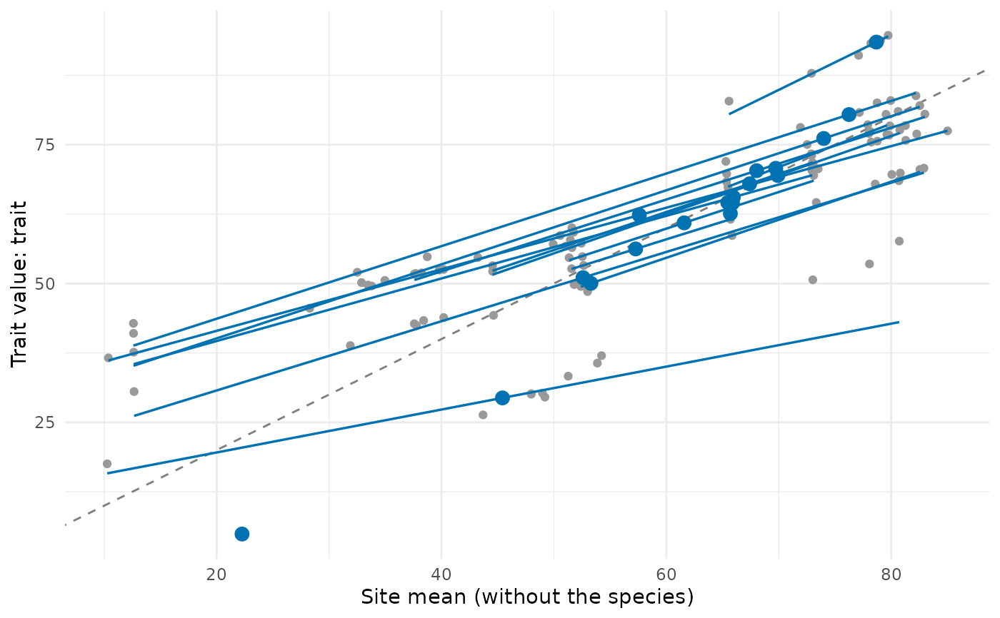
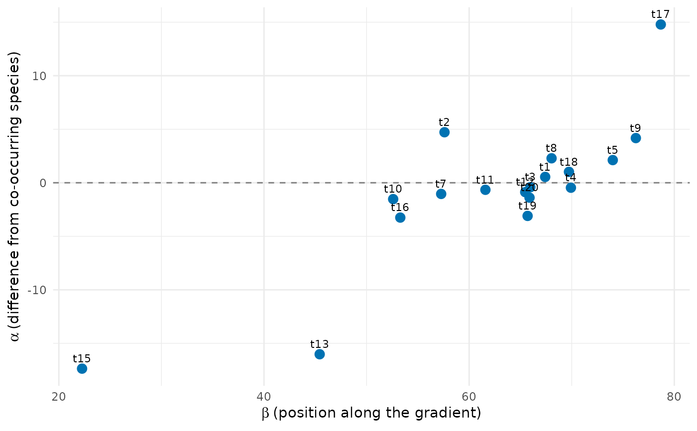
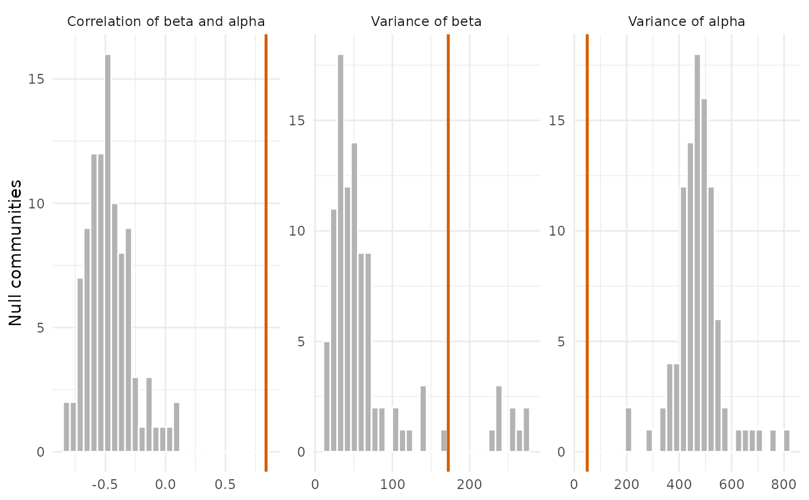

type = "gradient" draws the trait value of each population against the mean of its site,
with the line of each species over the range of its sites (its slope \(b_i\)) and the
species means at \((\beta_i, \bar t_i)\); the dashed line is \(y = x\), where
\(\alpha = 0\). type = "beta_alpha" draws \(\alpha\) against \(\beta\). For
trait_gradient_test(), the null distributions of the three statistics with the observed
value.
Arguments
- x
Result of
trait_gradient()ortrait_gradient_test().- type
"gradient"or"beta_alpha".- species_labels
Write the names of species in
type = "beta_alpha".- colour
Colour of the species lines and means.
- point_size
Size of the points.
- ...
Not used.
See also
trait_gradient(), trait_gradient_test()
Other trait variation among individuals:
community_index(),
neighbour_metrics,
nested_variance(),
null_intervals(),
plot.nested_variance(),
plot.trait_flex(),
plot.trait_rarefaction(),
plot.tstats(),
plot_population_traits(),
population_shifts(),
sample_individuals(),
subsample_individuals(),
trait_densities(),
trait_flex(),
trait_gradient(),
trait_gradient_bayes(),
trait_gradient_phylo(),
trait_gradient_test(),
trait_gradient_weights(),
trait_rarefaction(),
tstats(),
tstats_summary()
Examples
set.seed(1)
tree <- treeshapesim::sim_tree_shape(20)
sim <- simulate_metacommunity(landscape_implicit(15), species_traits(tree),
competition_matrix(tree, "none"), n_steps = 100,
seed_steps = 1:5)
ind <- sample_individuals(sim, n = 5, local_adaptation = 0.5, intraspecific_sd = 1)
tg <- trait_gradient(ind, abundance = "abundance")
plot(tg)

plot(tg, type = "beta_alpha", species_labels = TRUE)

plot(trait_gradient_test(tg, n_null = 99))
